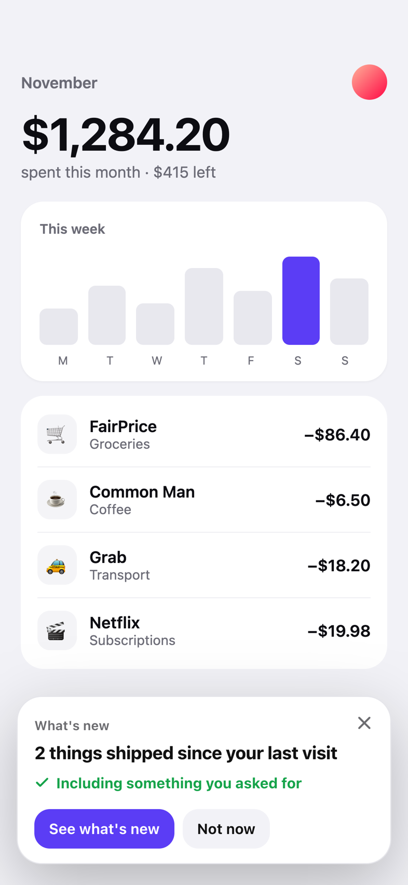

From ask to it's live. Without anyone opening a dashboard.

01
They ask where they are
A sheet that looks like part of your app. It finds what others already asked as they type.
Acme requests
YA-12 · Split a bill with my partner
Mei · 14 votes · “We share groceries and rent.”
PlannedShippedReply
02
You hear it on your phone
Every request lands in Telegram, Slack or Discord with buttons to plan, reply or ship.

03
Everyone who asked hears it
Write “closes YA-12” in a commit. YouAsked tells every person who asked, in your app.